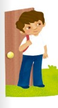
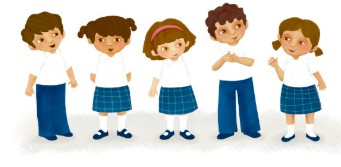

Bloque 3
142
- Otra vez 100 .............................................. Trayectoria 1
- Más sobre el peso< .........................................Trayectoria 2
- Secuencia de sucesos en el tiempo: día, semana y mes ...... Trayectoria 3
- Estrategias de suma y resta.................................Trayectoria 4
- Mosaicos y configuraciones geométricas......................Trayectoria 5
- Más sobre las longitudes....................................Trayectoria 6
- Figuras en cuerpos geométricos..............................Trayectoria 7
- Más de capacidad............................................Trayectoria 8
- Cooperativa de manteles.....................................Trayectoria 9
- Evaluación
- Bibliografía
- Créditos iconográficos
- Recortables
